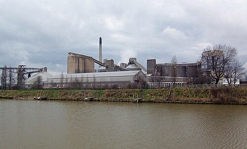

Actividad 18 · Empresarios mexicanos
Ingeniero regiomontano (1944-2014). En casi 30 años como director convirtió una cementera regional en una de las más grandes del mundo.
Nieto de Lorenzo Zambrano, fundador de Cementos Portland Monterrey, que en 1931 se unió con Cementos Hidalgo para formar Cementos Mexicanos (Cemex). Estudió ingeniería mecánica en el Tec de Monterrey y una maestría en Stanford. Entró a Cemex en 1968 y llegó a director general en 1985.
Presidió el consejo del Tec de Monterrey por muchos años.
Se funda Cementos Hidalgo en Nuevo León, origen de Cemex.
Zambrano asume la dirección. Vende negocios ajenos al cemento para concentrarse en lo que la empresa sabe hacer.
Compra las cementeras Valenciana y Sanson en España: primer gran salto fuera de América.
Adquiere Southdown en Estados Unidos.
Compra RMC (Reino Unido) y Rinker (Australia). Cemex llega a más de 50 países.
La crisis financiera golpea por la deuda de las compras; Zambrano reestructura la empresa hasta su muerte en 2014.
Enfoque: antes de crecer, dejó todo lo que no era cemento.
Tecnología: apostó por sistemas satelitales y de información para coordinar entregas cuando nadie en la industria lo hacía.
Riesgo: crecer con deuda lo llevó a la cima y casi lo derriba en 2008.
